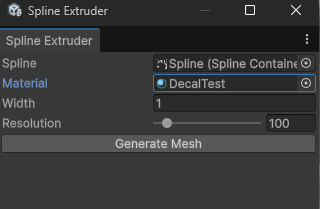

Spline-Based Mesh Generation Utility
I built this editor tool to speed up level dressing and content generation in Unity. It is focused on spline workflows so I can iterate quickly while keeping shape generation consistent.
1. Spline Extruder Window
This tool generates a mesh strip from a spline. It samples position, tangent, and up vectors, then builds vertices and triangles along the curve.

- Creates a custom mesh directly from spline data.
- Configurable width and sampling resolution.
- Automatic UV and triangle generation.
- Creates a ready-to-render GameObject with MeshFilter and MeshRenderer.
- Supports undo for quick iteration in editor workflows.
[MenuItem("Tools/Spline Extruder")]
public static void ShowWindow()
{
GetWindow<SplineExtruderWindow>("Spline Extruder");
}
if (GUILayout.Button("Generate Mesh"))
{
if (spline != null)
GenerateMesh();
}Code - GenerateMesh()
private void GenerateMesh()
{
var spl = spline.Spline;
List<Vector3> vertices = new();
List<Vector2> uvs = new();
List<int> triangles = new();
float totalLength = spl.GetLength();
for (int i = 0; i <= resolution; i++)
{
float t = (float)i / resolution;
spl.Evaluate(t, out float3 posF, out float3 tanF, out float3 upF);
Vector3 pos = (Vector3)posF;
Vector3 tan = math.normalize((Vector3)tanF);
Vector3 up = math.normalize((Vector3)upF);
Vector3 right = Vector3.Cross(tan, up).normalized;
Vector3 leftPoint = pos - right * (width * 0.5f);
Vector3 rightPoint = pos + right * (width * 0.5f);
vertices.Add(leftPoint);
vertices.Add(rightPoint);
float uvX = (float)i / resolution;
uvs.Add(new Vector2(0, uvX));
uvs.Add(new Vector2(1, uvX));
if (i < resolution)
{
int baseIndex = i * 2;
triangles.Add(baseIndex);
triangles.Add(baseIndex + 1);
triangles.Add(baseIndex + 3);
triangles.Add(baseIndex);
triangles.Add(baseIndex + 3);
triangles.Add(baseIndex + 2);
}
}
Mesh mesh = new Mesh();
mesh.name = spline.gameObject.name + "_ExtrudedMesh";
mesh.SetVertices(vertices);
mesh.SetUVs(0, uvs);
mesh.SetTriangles(triangles, 0);
mesh.RecalculateNormals();
mesh.RecalculateBounds();
GameObject meshObj = new GameObject(mesh.name);
meshObj.transform.SetParent(spline.transform);
meshObj.transform.localPosition = Vector3.zero;
meshObj.transform.localRotation = Quaternion.identity;
MeshFilter mf = meshObj.AddComponent<MeshFilter>();
MeshRenderer mr = meshObj.AddComponent<MeshRenderer>();
mf.sharedMesh = mesh;
mr.sharedMaterial = material != null ? material : new Material(Shader.Find("Standard"));
Undo.RegisterCreatedObjectUndo(meshObj, "Created Extruded Spline Mesh");
}This utility was built under the UbiJam namespace and is part of my broader Unity toolchain, similar in spirit to the custom animation workflow shown in my Custom Animator tool.